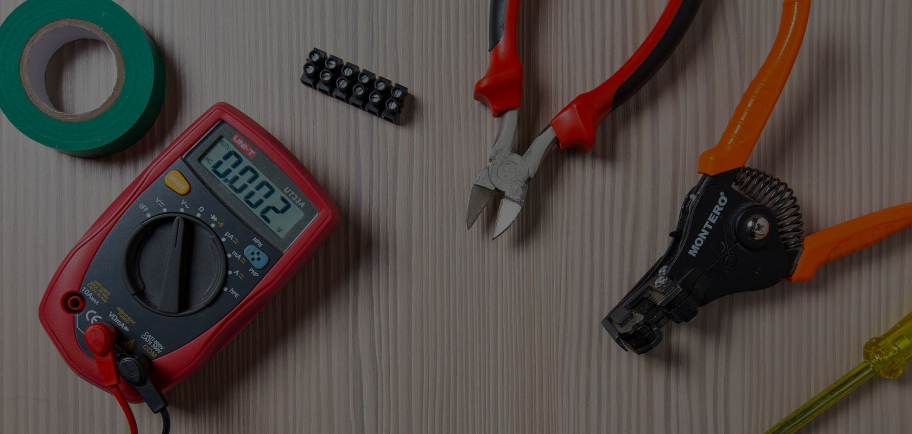

<ion-header >
  <ion-toolbar color="primary">
    <ion-buttons slot="start"><ion-menu-button></ion-menu-button></ion-buttons>
    <ion-title color="warning"><div class="center"> Nearby Services</div></ion-title>
  </ion-toolbar>
</ion-header>

<ion-searchbar color="white" [(ngModel)]="searchTerm"
(ionChange)="setFilteredItems()"  placeholder="Search Services"></ion-searchbar>

<ion-slides pager="true"    [options]="slideOpts" style="margin-top: 10px;margin-bottom: 15px;">
  <ion-slide>
    
        <!-- <ion-img [src]="../../../assets/bg2.jpg"></ion-img> -->
                
      
    
    

  </ion-slide>
  <ion-slide>
    
        <!-- <ion-img [src]="../../../assets/bg2.jpg"></ion-img> -->
        
      
  </ion-slide>
  <ion-slide>
    
        <!-- <ion-img [src]="../../../assets/bg2.jpg"></ion-img> -->
        
      
  </ion-slide>
</ion-slides>


<ion-content style="z-index: 1;" >
  
  
  
  <ion-grid fixed class="homegrid">
    <ion-row *ngFor="let row of grid">
      <ion-col size="3" width-50 *ngFor="let innerdata of row">
        <ion-card class="ioncardservice" *ngIf="innerdata?.Categorypath; else elsePerfId;" (click)="clickServices(innerdata)"  tappable>
          
          
          
          <h5 class="ion-customcolor">{{innerdata?.Categoryname}} </h5>
        
        
      
        </ion-card>
        <ng-template #elsePerfId>
          
        </ng-template>
      </ion-col>
    </ion-row>
  </ion-grid>
</ion-content>
